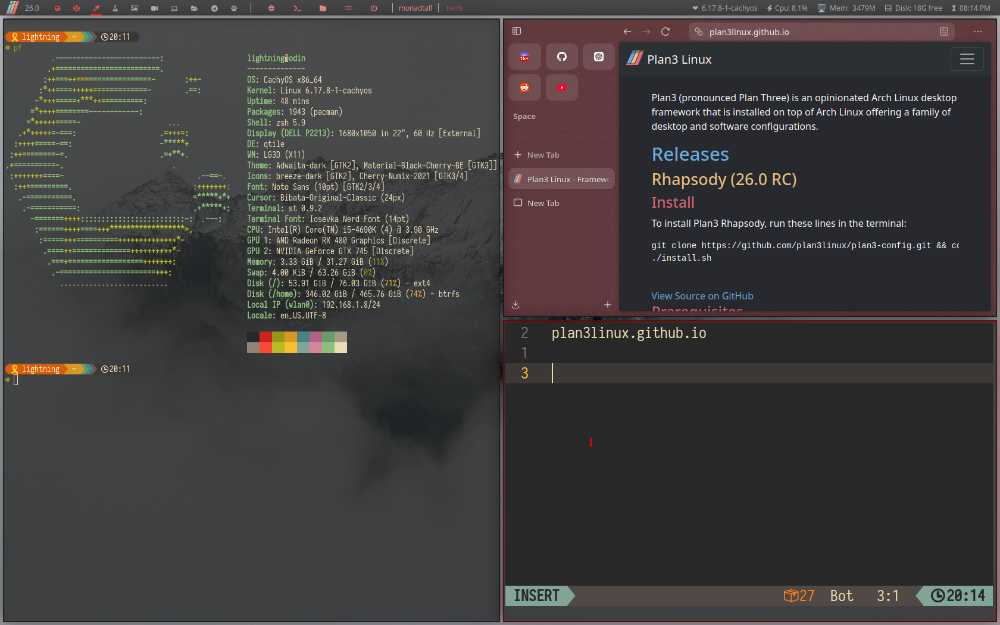
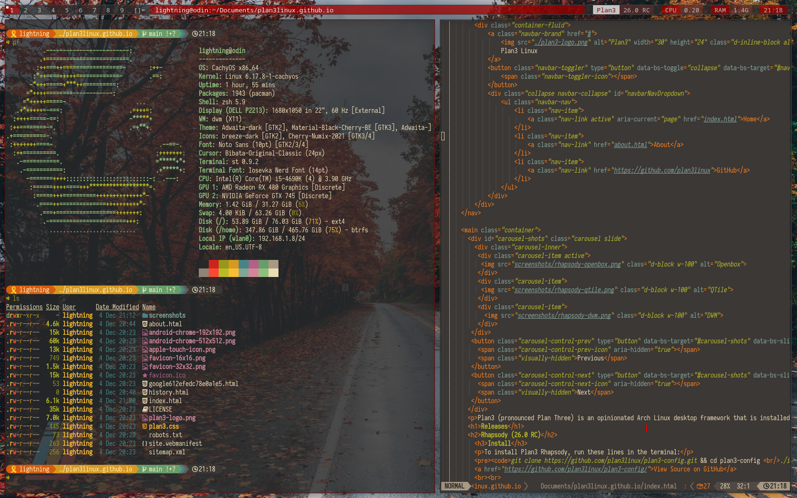

Plan3 (pronounced Plan Three) is an opinionated Arch Linux desktop framework that is installed on top of Arch Linux offering a family of desktop and software configurations.
Releases
Rhapsody (26.0 RC)
Install
To install Plan3 Rhapsody, run these lines in the terminal:
git clone https://github.com/plan3linux/plan3-config.git && cd plan3-config
./install.shPrerequisites
- Arch Linux or CachyOS or etc.
- x86_64 and ARM64 Supported
- Paru
- Sudo
Programs and Window Managers
Plan3 comes bundled with pre-made configurations for various programs and window managers. Get right into work and learn the minimalist linux life without the fuss of designing a config from scratch.
Window Managers:- Openbox
- BSPWM
- QTile
- DWM
- i3
Programs
- ST - Terminal
- NeoVIM - Text Editor
- Emacs - Text Editor thats more than an editor
- Zen Browser - Fork of Firefox
About
Plan3 is installed ontop of an already existing Arch-based system for these reasons:
- Easy to keep up to date
- Cross-compatibility across x86_64, ARM64, and even RISC-V
- Easy to install various arch-distros like Manjaro, Arco Linux, and EndeavorOS.
- Paves the way for future opportunities for non-arch installs like on Debian, Gentoo, RHEL, or other distros